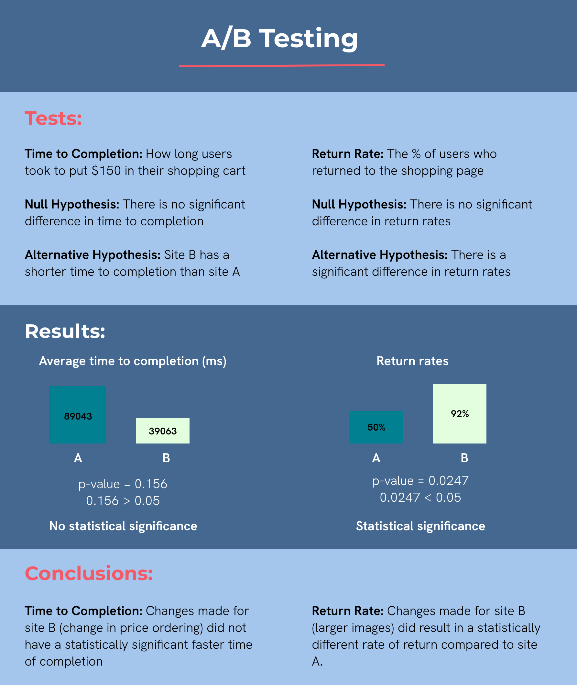

A/B Testing: Which Interface performs better?
Overview
The goal of this project was to gain experience in A/B testing and understand the statistical methods
used to inform design decisions. I made slight changes to a web interface, gathered user data, and then
analyzed which website performed better according to my metrics.
Websites Tested
View the website here. Refresh to see the different versions!
Key Changes
- Image size is bigger on B
- Cacti are orderd by descending price on B rather than ascending price on A
- Button text color and cart match the visual design (color) on B
Hypotheses
Time to Completion
Time to completion defined as how long it took a user to put $150 worth of cacti into their cart
- Null Hypothesis: There is no difference in time to completion between version A and version B
- Alternative Hypothesis: Version B will have a shorter time to completion because the cacti are orderd from high to low price which will make it easier to spend more compared to version A
Return Rate
Return rate defined as whether or not a user returned to the shopping screen after the checkout screen
- Null Hypothesis: There is no difference in return rate between version A and version B
- Alternative Hypothesis:There will be a difference in return rate between version A and version B because version B is more visually appealing and inviting with larger image size and more consistent visual design
Data collection
I sent my website to peers in my UI/UX class. Each person was tasked with putting $150 worth of cacti into
their cart. Users did not know which version of the website they were getting and both versions had the same task to perform.
I then downloaded the raw data from Heroku and extrapolated my desired metrics from analyzing the log times and page loads.
Results
I created and ran python scripts on my data to perfrom an independent sample t-test for time to completion
and a chi squared test for return rate. I have summarized the revelant findings and results in an infographic below.

Takeaways
General
- I learned about the value of statistics in evaluating UI decisions. Even though
my average time to completions were different, they were not statistically significantly different.
- I would like to perform more A/B testing in the future, especially on a website/app used in real life
Limitations
- I only had data from 24 users total, which may not have been a large enough sample size to formulate results
Design Principles
- It is important to have a consistent visual design style (such as color) because this can result in
a statistically significant difference in the percentage of users who want to return to your site